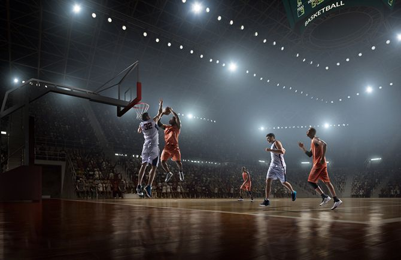

benarbia nadine is a 24-year-old local activist who enjoys badminton, watching YouTube videos and duck herding. She is funny and kind, but can also be very selfish and a bit grumpy. She is addicted to strawberry bonbons, something which her friend Esme Deanna O'Connor pointed out when she was 16. The problem intensified in 2016. In 2016, benarbia lost her job as an admin assistant as a result of her addiction. She is a tunisenne Christian who defines herself as straight. She has a degree in philosophy, politics and economics. She has a severe phobia of dolls Physically, benarbia is slightly overweight but otherwise in good shape. She is tall with light skin, red hair and brown eyes. She has a birthmark on her neck.
i love making AMVs Creative people who love making stuff, people you'll find on Vimeo, are working on it. ONE LAST VIDEO FOR THE ROAD If one video represents the idealistic spirit of the festival, it's Mickey Smith's Dark Side of the Lens, which won the Action Sports category
i love basketball i used to play with my local team
